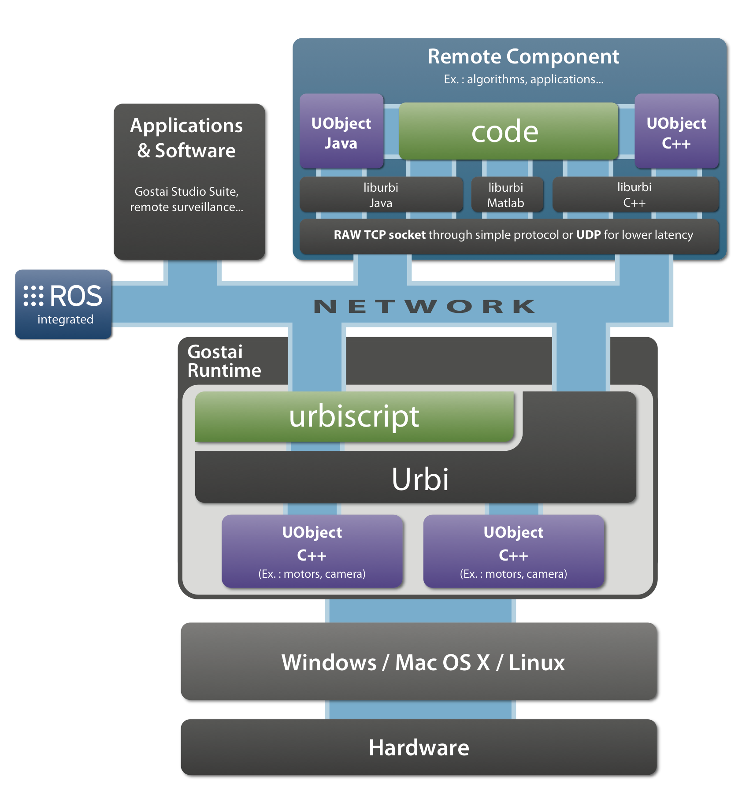

This chapter extends the ROS official tutorials 1 . Be sure to complete this tutorial before reading this document.
First we will take back examples about topics; make sure that talker and listener in the ‘beginner_tutorial’ package are compiled. You can recompile it with the following command:
To communicate with ROS components, you need to launch them. You can do it by hand, or ask Urbi to do it for you. To launch new processes through Urbi, we will use the class Process.
Let’s say we want to start roscore, and the talker of the beginner tutorial. Open an Urbi shell by typing the command ‘rlwrap urbi -i’. Here rlwrap makes ‘urbi -i’ acts like a shell prompt, with features like line editing, history, …
var core = Process.new("roscore", []);
[00000001] Process roscore
var talker = Process.new("rosrun", ["beginner_tutorial", "talker"]);
[00000002] Process rosrun
core.run;
talker.run;
At this point, the processes are launched. The first argument of Process.new is the name of the command to launch, the second is a list of arguments.
Then you can check the status of the processes, get their stdout/stderr buffers, kill them in urbiscript (see Process).
First you need to make sure that roscore is running, and the ROS module is loaded correctly:
Then we can get the list of launched nodes:
This returns a Dictionary with the name of the node as key, and a dictionary with topics subscribed, topics advertised, topics advertised as value.
We can check that our talker is registered, and on which channel it advertises:
// Get the structure.
// "|;" is an idiom to discard the display of the return value.
var nodes = Ros.nodes|;
// List of nodes (keys).
nodes.keys;
[00000002] ["/rosout", "/urbi_1273060422295250703", "/talker"]
// Details of the node "talker".
nodes["talker"]["publish"];
[00000003] ["/rosout", "/chatter"]
Here we see that this node advertises ‘/rosout’ and ‘/chatter’. Let’s subscribe to ‘/chatter’:
// Initialize the subscription object.
var chatter = Ros.Topic.new("/chatter")|;
// Subscribe.
chatter.subscribe;
// This is the way we are called on new message.
var chatTag = Tag.new|;
chatTag: at (chatter.onMessage?(var e))
// This will be executed on each message.
echo(e);
In this code, e is a Dictionary that follows the structure of the ROS message. Here is an example of what this code produces:
[00000004] *** ["data" => "Hello there! This is message [4]"]
[00000005] *** ["data" => "Hello there! This is message [5]"]
[00000006] *** ["data" => "Hello there! This is message [6]"]
We can also get a template for the message structure on this channel with:
To stop temporarily the Global.echo, we take advantages of tags (Section 10.3), by doing chatTag.freeze. Same thing goes with unfreeze. Of course you could also call chatter.unsubscribe, which unsubscribes you completely from this channel.
To advertise a topic, this is roughly the same procedure.
Here is a quick example:
// Initialize our object.
var talker = Ros.Topic.new("/chatter")|;
// Advertise (providing the ROS Type of this topic).
talker.advertise("std_msgs/String");
// Get a template of our structure.
var msg = talker.structure.new;
msg["data"] = "Hello ROS world"|;
talker << msg;
We have just sent our first message to ROS, here if you launch the chatter, you will be able to get the message we have just sent.
The << operator is an convenient alias for Ros.Topic.publish.
Now we are going to move the turtle with Urbi. First let’s launch the turtle node:
Ros.topics shows that this turtle subscribes to a topic ‘/turtle1/command_velocity’. Let’s advertise on it:
var velocity = Ros.Topic.new("/turtle1/command_velocity")|;
velocity.advertise("turtlesim/Velocity");
velocity.structure;
[00000001] ["linear" => 0, "angular" => 0]
Now we want to have it moving in circle with a small sinusoid wave. This goes in two step. First, we set up the infrastructure so that changes in Urbi are seamlessly published in ROS.
// Get our template structure.
var m = velocity.structure.new |;
m["linear"] = 0.8 |;
var angular = 0 |;
// Every time angular is changed, we send a message.
at (angular->changed?)
{
m["angular"] = angular;
velocity << m
};
In the future Urbi will provide helping functions to spare the user from the need to perform this “binding”. But once this binding done, all the features of urbiscript can be used transparently.
|
For instance we can assign a sinusoidal trajectory to ‘angular’, which results in the screen-shot on the right-hand side.
Every time angular is changed, a new message is sent on the Topic ‘/turtle1/command_velocity’, thus updating the position of the turtle. After 20 seconds the command is stopped. |
 |
Alternatively, Tags could have been used to get more control over the trajectory:
// A Tag to control the following endless statement.
var angTag = Tag.new|;
angTag:
// Bind "angular" to a trajectory.
// Put in background thanks to ",", since this statement is never ending.
angular = 0.3 sin: 2s ampli: 2,
// Leave 20 seconds to the turtle...
sleep(20s);
// before freezing it.
angTag.freeze;
We won’t cover this code in details, but the general principle is that angular is updated every 20ms with the values of a sinusoid wave trajectory with 0.3 as average value, 2 seconds for the period and 2 for the amplitude. See TrajectoryGenerator for more information. After 20 seconds the tag is frozen, pausing the trajectory generation and the at.
Services work the same way topics do, with minor differences.
Let’s take back the turtle simulation example (Section 12.1.3.2). Then we can list the available services, and filter out loggers:
var logger = Regexp.new("(get|set)_logger") |;
var services = Ros.services.keys |;
for (var s in services)
if (s not in logger)
echo(s);
[00000001] *** "/clear"
[00000001] *** "/kill"
[00000001] *** "/turtle1/teleport_absolute"
[00000001] *** "/turtle1/teleport_relative"
[00000001] *** "/turtle1/set_pen"
[00000001] *** "/reset"
[00000001] *** "/spawn"
The closure construct allows us to keep access to the local variables, here logger.
Now there is a service called ‘/spawn’; to initialize it:
The new function takes the service name as first argument, and as second argument whether the connection should be kept alive.
Since the creation of this object checks the service name, you should wait until initialized is true to use this service. You can also see the structure of the request with spawn.reqStruct, and the structure of the response with spawn.resStruct.
Now let’s spawn a turtle called Jenny, at position (4, 4).
var req = spawn.reqStruct.new |;
req["x"] = 4 |
req["y"] = 4 |
req["name"] = "Jenny" |;
spawn.request(req);
[00000001] ["name" => "Jenny"]
This section will use topics manipulation with advertising and subscription. Be sure to understand these topics before doing this tutorial.
Requirements You have to finish the image Publisher/Subscriber tutorial (http://www.ros.org/wiki/image_transport/Tutorials) before doing this tutorial.
First, we will make a ROS Publisher and subscribe to it with Urbi. Make sure that Publisher ‘learning_image_transport’ package is compiled:
We will also run urbi with a network connection opened (e.g., on port 54000) to allow urbi-image (Section 19.4) to connect to it.
Also, you have to run roscore to communicate with ROS.
Run the Publisher The Publisher is a process that will send a image and wait for a Subscriber to get it.
// In this example the image is in the current directory.
var publisher =
Process.new("rosrun",
["learning_image_transport", "my_publisher", "test.jpg"]);
[0000002] Process rosrun
publisher.run;
Using a camera to display By default, urbi-image displays the images that are available via the camera device (see Section 19.4). To simplify the setup, let’s define a pseudo camera which will store the data received:
class Global.camera: Loadable
{
// A variable to store image data.
UVar.new(this, "val");
val = 0;
}|;
Subscribe to the topic Now, our Publisher is running and we have a camera waiting for data. All we need to do is connecting to the Publisher with a topic, the Subscriber.
Have a look at the different topics created by the Publisher, for instance by running rxgraph, which generates the graph in paragraph 12.1. As you can see, seven topics are available for the camera. We will use the ‘/camera/image/compressed’ topic for this example. For further information about the image format in ROS see http://www.ros.org/doc/api/sensor_msgs/html/msg/CompressedImage.html.
var cameraTopic = Ros.Topic.new("/camera/image/compressed")|;
at (cameraTopic.onMessage?(var imgMsg))
{
// Converting the ROS image to Urbi format.
imgMsg["data"].keywords = imgMsg["format"]|
// We can now store the data into camera.
if (!camera.val)
echo("Image well received. Store the image into the camera") |
camera.val = imgMsg["data"];
},
// Waiting for the "publisher" Process to be set up.
sleep(2s);
cameraTopic.subscribe;
We are now connected and ready to display.
In a new terminal run urbi-image:
You have now your image displayed in a window.
Now, we want to send images to ROS using a Urbi Publisher. Make sure roscore is running and ‘learning_image_transport’ package is compiled.
Run the Subscriber The basic Subscriber in the ‘learning_image_transport’ package is expecting a ‘/camera/image’ topic. To avoid modifying the Subscriber code in ROS, we will simply ask to the Subscriber topic to accept ‘/camera/image/compressed’ topics.
var subscriber =
Process.new("rosrun",
["learning_image_transport", "my_subscriber",
"_image_transport:=compressed"]);
[00037651] Process rosrun
subscriber.run;
Publishing images with Urbi The ‘sensor_msgs/CompressedImage’ message format provides a structure that requires a few changes.
// File.new("...").content returns a Binary.
var urbiImage = File.new("test.jpg").content|;
urbiImage.keywords = "jpeg"|;
var publisher = Ros.Topic.new("/camera/image/compressed")|;
// Advertising the type of message used.
publisher.advertise("sensor_msgs/CompressedImage");
var rosImg = publisher.structure.new|;
// The rosImg is a dictionary containing a Binary and a String.
rosImg["data"] = urbiImage|;
rosImg["format"] = "jpeg"|;
This message contains more fields but you need only these two to send an image.
Now, you just have to publish the image.
Communication is done, the image should be displayed.
We have worked with a roscore running on the machine as the ROS processes but the purpose of using ROS with Urbi is to communicate with a remote machine. All you need is to setup your network configuration to avoid unexpected behaviors (see NetworkSetup2 ).
Make sure the ROS environment variables are well set, especially ROS_URI, ROS_HOSTNAME, ROS_IP.
See Tutorials/MultipleMachines3 for additional information.
Try our tutorials remotely to check if the connection is set correctly.
To go further… Please see the Urbi/ROS Reference Manual, Section 22.